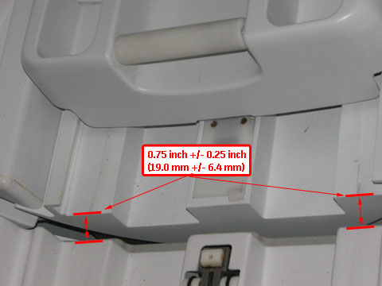
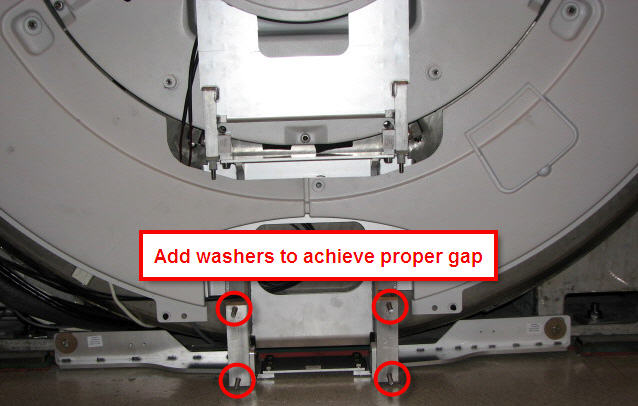
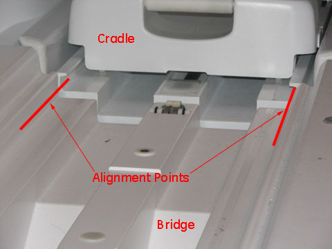
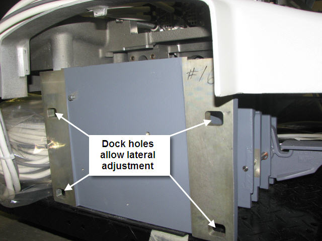
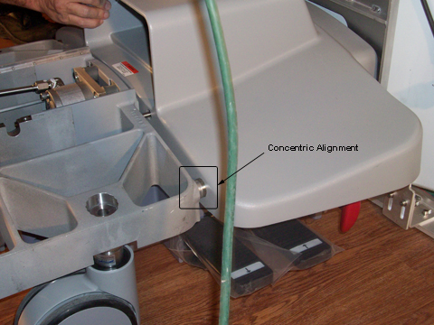
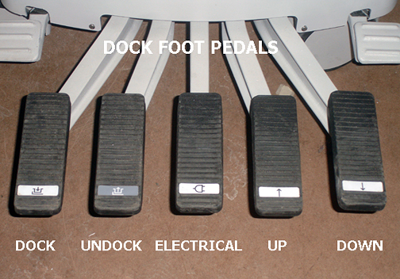

Operating Documentation
Direction 5500113, Rev# 3
Discovery MR450 1.5T Service Methods
Module Version 9.0, Version Date 9/2/10
Operating Documentation |
| Required Persons | Preliminary Reqs | Procedure | Finalization |
|---|---|---|---|
| 2 | Not Applicable | 45 mins | Not Applicable |
The following Dock Adjustment procedure is required to properly align the cradle to the bridge in both the Z and X directions. Proper dock alignment ensures smooth travel of the cradle and protects table components from premature wear.
This document consists of the following:
| Item | Qty | Effectivity | Part# | Manufacturer | |
|---|---|---|---|---|---|
| Nonmagnetic Tool Kit | 1 | - | 5112581 | - | |
| Item | Qty | Effectivity | Part# | Manufacturer |
|---|---|---|---|---|
| 11 mm Washers | varies | - | - | - |
| ||||
| FATAL ELECTRIC SHOCK HAZARD!! | ||||
| To prevent fatal electric shock, disconnect power from the PDU before you perform any procedure that requires you to remove the dock. | ||||
| PERFORM LOCKOUT / TAGOUT PROCEDURE PER GE OSHA LOCKOUT / TAGOUT REQUIREMENTS LISTED IN THE FIELD SERVICE EHS MANUAL & TRAINING 2000 P/N 2135387-200. |
| ||||
| POSSIBLE PERSONAL INJURY! | ||||
| THIS PROCEDURE REQUIRES MOVEMENT OF FERROUS MATERIAL IN CLOSE PROXIMITY TO THE MAGNET. | ||||
| TWO FIELD ENGINEERS ARE REQUIRED AT ALL TIMES. |
| ||||
| Personal injury and equipment damage | ||||
| Strong Magnetic Field | ||||
| When servicing any magnetic equipment, it is critically
important that the service engineer consciously plan the path to be
taken when moving highly ferrous devices in the magnet environment.
the path should be as far from the magnet as practical and avoid high
flux-density fields. Safety Requirements
When planning a service path, it is critical that the path be clear and sufficiently wide. Ensure that there are no trip hazards, obstacles, clutter, slippery surfaces or other items even partially restricting the path. If there are portable obstacles in a path, remove them from the area and replace them after the service action is completed. It is required to walk the path prior to beginning service to ensure that there is sufficient space through which to pass for yourself and the object being serviced. |
This procedure provides the Longitudinal Adjustment (i.e., in and out) and the Lateral Adjustment (i.e., left to right) to center the dock. For proper Patient Table docking, the dock assembly must be adjusted to meet three criteria:
Gap between the leading edge of the cradle top and front of Bridge must be 0.75 in. ±0.25 in. (19.0 mm, ±6.4 mm). This ensures that the gap is narrow enough to allow for smooth travel, but large enough to avoid rubbing on covers or bridge and to avoid pinch hazard. See Illustration 1.
Dock assembly must be square to the bridge, so axis of cradle travel is the same for both Patient Table and bridge.
Bosses of dock and patient table align to ensure proper rotary pump alignment.
With the Patient Table docked, measure the distance from the Patient Table top to the front of the magnet bridge. Distance should be 0.75 in., ±0.25 in. (19.0 mm, ±6.4 mm) and should be equal to each other so the Patient Table top is colinear with the bridge.
Illustration 1: Table Dock Measurement

If adjustment is required:
Follow instructions in Dock Removal and Installation to remove dock from the magnet room.
Add or remove washers at the dock assembly and remeasure until the proper gap is achieved. See Illustration 2.
Illustration 2: Dock Positioning Adjustment

Follow the instructions in Dock Removal and Installation to install the dock.
Raise table to maximum height using Up foot pedal.
Dock Patient Table.
Drive cradle all the way into magnet. Perform dock lateral adjustment until vertical wheel tracks are aligned right and left.
Check alignment of Patient Table against bridge (left-to-right alignment only). Use vertical wheel tracks to line up table with magnet bridge. Use the inner edge corners of the table and magnet bridge as alignment points. Height is adjusted using the Table Top Height Adjustment procedure.
Illustration 3: Cable Track Alignment Points

If adjustment is required, loosen nuts on dock bracket (shown in Illustration 2) to rear of dock (shown in Illustration 4). Move dock left or right to proper position so wheel tracks line up.
Illustration 4: Rear of Dock and Lateral Bolt Holes

Move patient table into a docked position.
Inspect the bosses on both sides of the table and dock for concentric alignment.
Illustration 5: Inspect Bosses for Concentric Alignment

| NOTE: | Missing front table cover, as shown in Illustration 5 may result in 16-channel systems reporting a 32-channel electrical connector not attached. Replace the front cover to prevent these errors when adjustment is complete. |
Adjust the table casters as necessary to ensure concentric alignment in the vertical direction. (See Leveling Patient Table.)
Dock the Patient Table using the Dock pedal, paying close attention to the force required to engage the docking mechanism. (Initial docking should not require significant force to depress dock pedal.)
Illustration 6: Dock Pedals

Note the following Dock Pedal Conditions:
When depressing the Dock Pedal in Step 1, if the force needed was other than a crisp snap at the bottom of the stroke, then one of two conditions are in effect and action is required:
Too Loose - Minimal or no force at all was needed to reach the bottom of the stroke.
Too Tight - Considerable to significant force was needed to reach the bottom of the stroke, resulting in a hard, strong snap at the end.
| NOTE: | Both conditions ("too loose" and "too tight") require the same action of loosening the set screw. |
Loosen set screw. (See Illustration 7.)
| ||||
| Do not attempt to fully engage the Dock Pedal if the force needed is too strong. | ||||
| The hook will become overstressed and bend, thus resulting in its replacement. | ||||
Adjust the hook by loosening the lock nut at the rear of the hook, and turning the hook clockwise (tighten) or counterclockwise (loosen). One full turn is equal to 1/16 inch.
| NOTE: | Patient Table must be undocked for all hook adjustments. Make appropriate number of turns on the hook, retighten the lock nut, and then retest the force needed on the Dock Pedal when docking the table. |
Illustration 7: Dock Hook Tension Adjustment

Repeat Step 4 until a crisp snap of the hook is achieved when docking the Patient Table.
Re-tighten the set screw.
Replace all covers.
Perform Patient Table Movement Verification.